STRAWBERRY LEMONADE
Sun-bright citrus and summer berry.
Tea Light is a premium candle collection for Bird & Blend that carries the tea ritual beyond the cup, turning the brand's best-selling blends into plant-based home fragrance.
It started from an open brief: how might a physical interaction with an object enhance personal nourishment? I chose the open brief so the product would come out of the research rather than being decided at the start.


The share of adults aged 16 to 64 in England with a common mental health condition such as anxiety or depression has risen from 17.6% in 2007 to 22.6% in 2023/24 (Adult Psychiatric Morbidity Survey, NHS England, 2025), so I looked for a calming ritual people already have. Tea was the obvious one: 71% of the people I surveyed drink tea as a self-care ritual, and the L-theanine in tea leaves has been shown in clinical trials to reduce stress (Williams et al., 2020).
I spent twenty minutes observing Bird & Blend's Brighton flagship. Three in every five customers commented on how good the shop smelled, but nothing on the shelves let them take that scent home. In my survey, 51% were interested in a Bird & Blend candle range and 83% of Bird & Blend customers said they would buy a lifestyle product from the brand.
That became the problem statement: the nourishing ritual ends at the bottom of the mug.
Smell is the only sense wired straight to the limbic system, the part of the brain that handles emotion and memory, which is why a scent can change your mood before you notice it. Plant-based scents can lower blood pressure and cortisol: in a four-week trial, adults with high blood pressure who breathed in a blend of lavender, ylang-ylang, marjoram and neroli oils saw both fall (Kim et al., 2012). Nature indoors helps more broadly too: office workers surrounded by natural elements such as plants and daylight report 13% higher wellbeing (Human Spaces report, Cooper, 2014).
The market backs it up. The UK candle market was worth about $700 million in 2024 and is forecast to reach $1.14 billion by 2030 (TechSci Research, 2025), and shoppers are moving away from paraffin towards soy and other natural waxes. Premium candles sit between Yankee Candle (£10 to £30) and Jo Malone (£48 to £80), and Bird & Blend's existing gift tins already sit in the £30 to £50 band in between.
I compared three ways to bring the scent home. A reed diffuser gives a constant scent but has no ritual and a price point too low for the brand. A bath and body range leads on wellness, but it is the biggest leap for the brand and people may not want their favourite tea on their skin. A candle has a ritual built in, translates directly from the tea blends and fits the price band.
| Criteria | Reed diffuser | Bath and body | Candle |
|---|---|---|---|
| Brand fit | 3 | 1 | 5 |
| Ritual | 1 | 3 | 5 |
| Sensory | 4 | 3 | 4 |
| Plant based | 5 | 3 | 5 |
| Price band | 2 | 3 | 5 |
| Manufacturability | 5 | 2 | 4 |
| Total out of 30 | 20 | 15 | 28 |
Each scent maps to an existing Bird & Blend blend, so the fragrance work is interpretation rather than invention. Strawberry Lemonade is the bright summer scent, Apple Strudel the autumn and winter one, Blue Raspberry the fresh, cooling one, and Chocolate & Notella Pancake a seasonal scent for pancake day, to show the range can keep growing through the year.
Sun-bright citrus and summer berry.
Spiced orchard, cinnamon and vanilla.
Indulgent cocoa warmth with hazelnut.
Wild berry: zesty, fresh and cooling.
To check that tea scent survives in wax at all, I poured three test candles, steeping real tea into soy wax for different lengths of time.
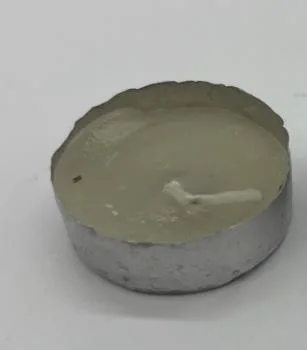
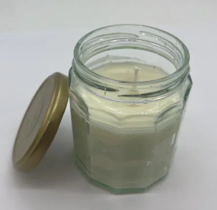
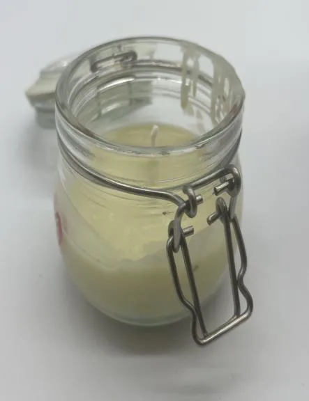
The steeping time mattered more than the wax volume, and the four-hour, low-temperature steep became the working baseline. These kitchen tests are proof of principle, not the production formula: scaling up needs a UK fragrance house that can guarantee batch consistency and IFRA compliance.
My first box used a limited navy palette, a food photo and very little detail. It worked, but it had none of Bird & Blend's charm. The second, made around the Apple Strudel tea I had to hand, was better styled but still didn't look like something Bird & Blend would make themselves, so I went back to studying their boxes.
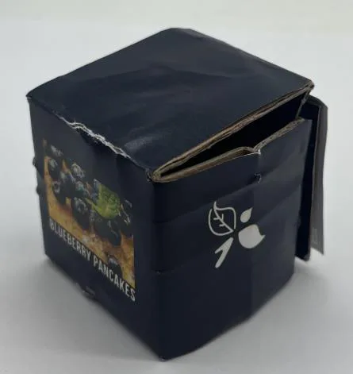
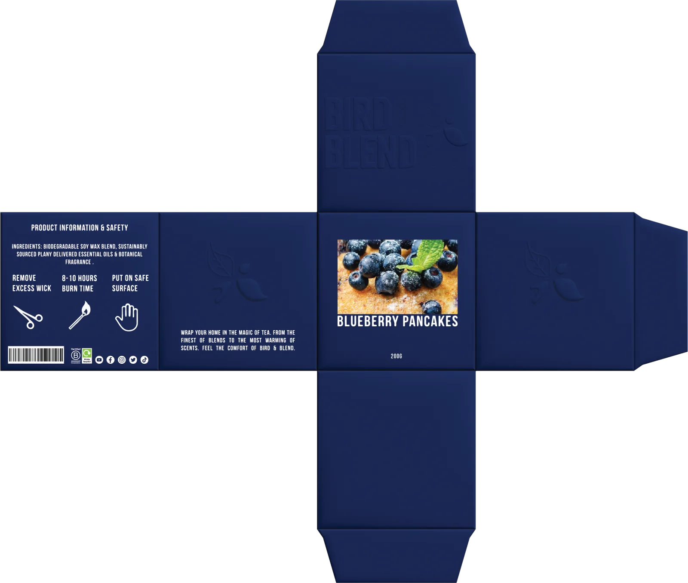
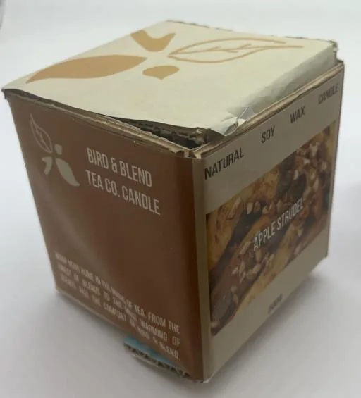
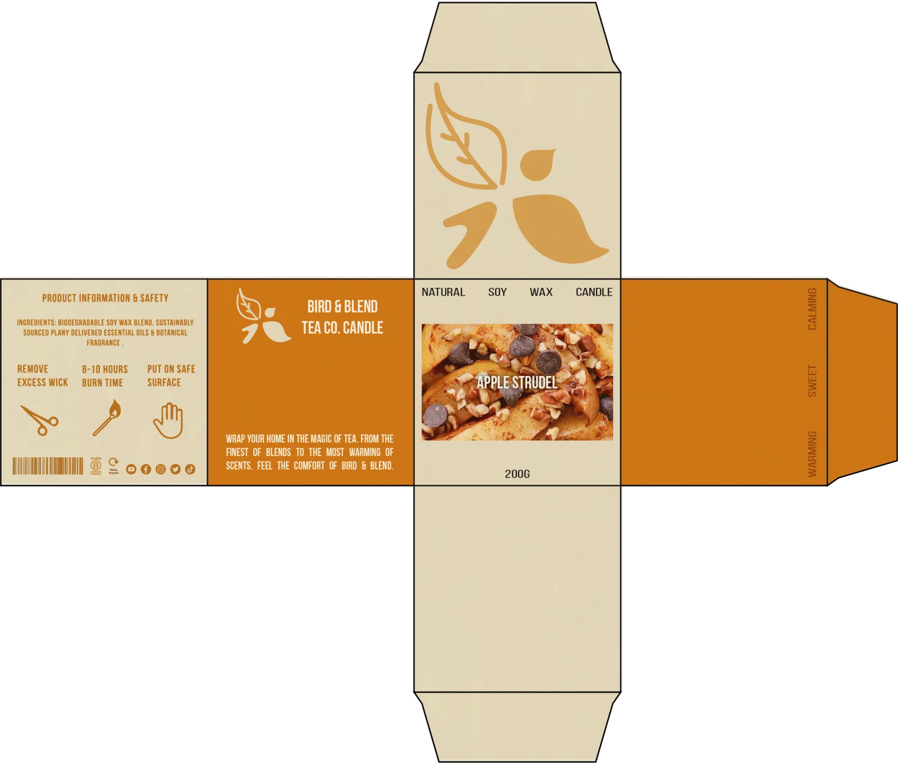
The third round is where the brand clicked. I drew a set of colourful illustrated assets to scatter around the box and brought in the repeated, descending text found across Bird & Blend's range. I also tested three types of logo panel: a photo of the blend, the name alone, and the name with a picture of the candle. The photo and the candle both took away from the playful feel, so I kept just the name and made it stand out more.
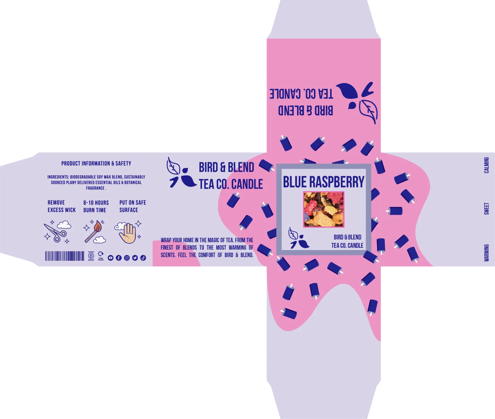
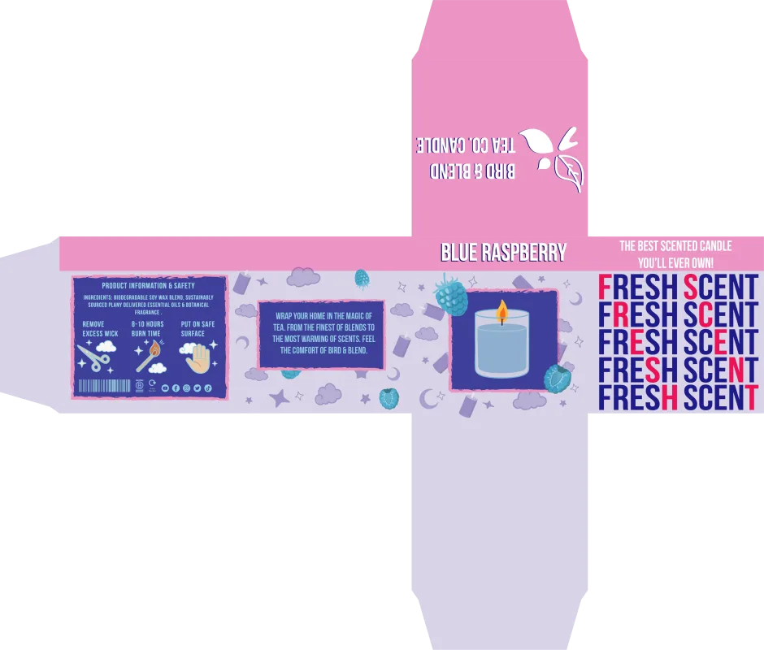
The final box keeps the descending text, simplifies the back, and adds a To/From gifting panel on the lid, as the PDS asked for and in line with Bird & Blend's own gift boxes. It is uncoated, FSC-certified recycled kraft board printed with soy inks, held together with tab locks instead of glue so it can go straight into home recycling.
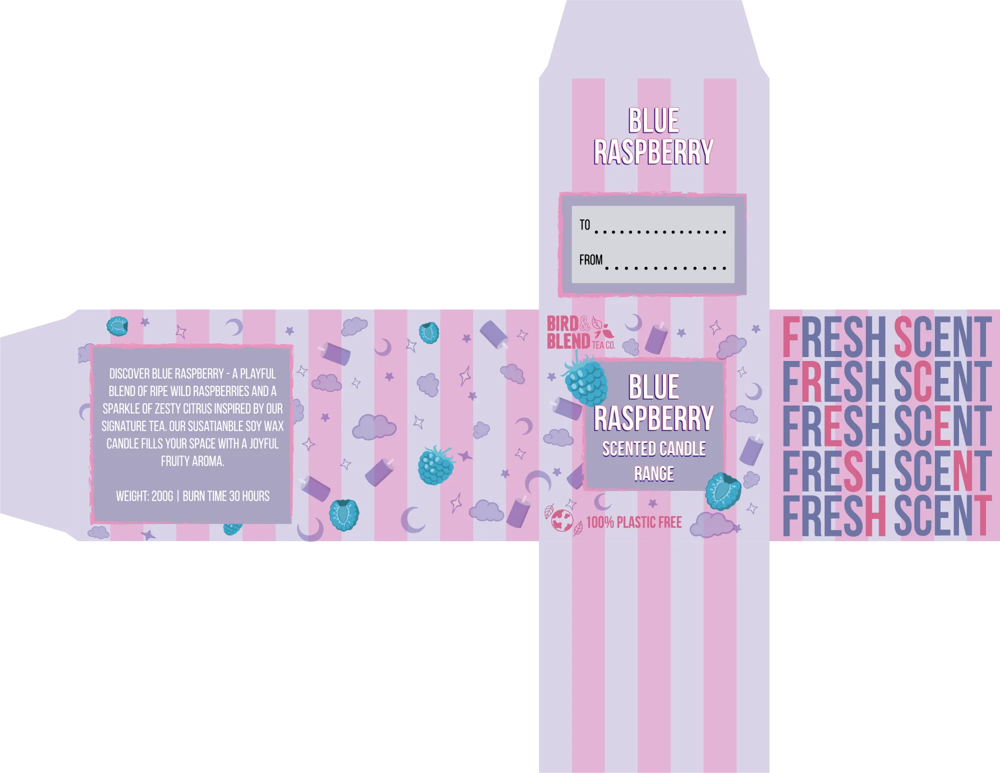
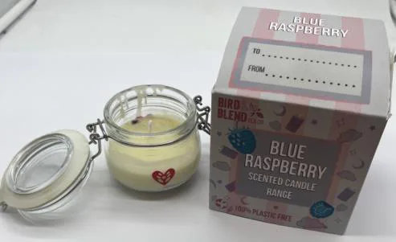
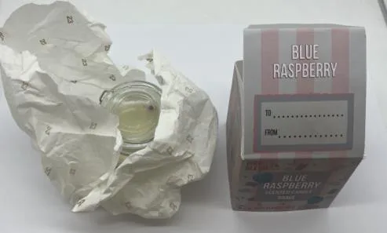
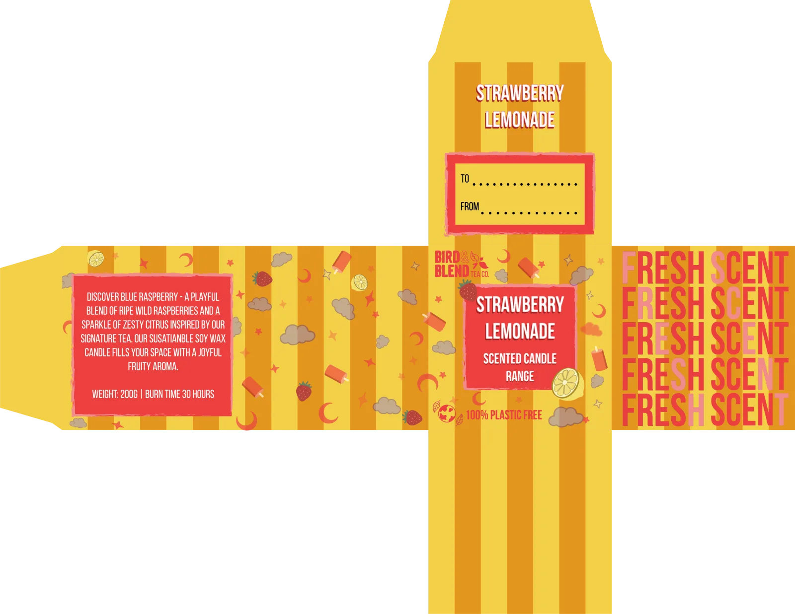
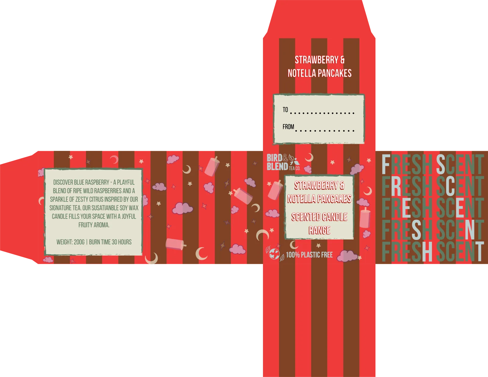
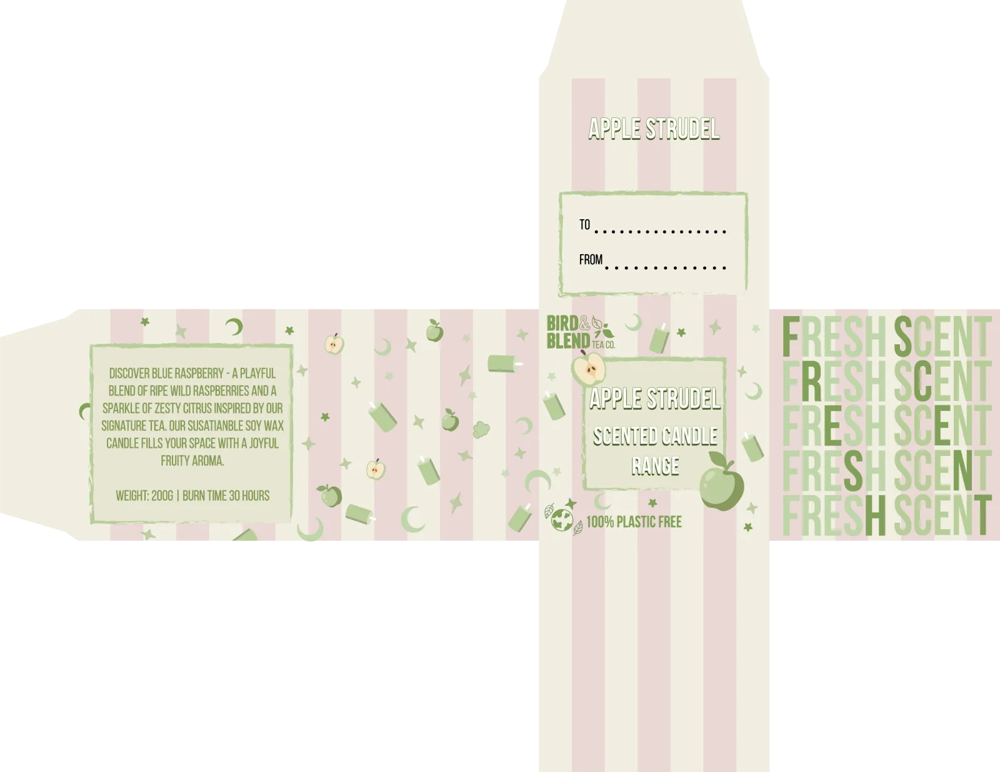
Every material follows the brand's plastic-free values: a 60/40 soy and coconut wax that burns more slowly than paraffin, an unbleached, lead-free cotton wick, IFRA-compliant vegan fragrance oils, and a refillable recycled glass vessel.
I checked that it could actually be made. UK fragrance houses such as CPL Aromas, Carvansons and Stamford London are IFRA registered and supply at small-batch volumes. Hand pouring one to two thousand units per scent per month is realistic, with a 30-day lead time. UKCA and CE marking, ASTM F2417 fire safety and CLP fragrance labelling are all non-negotiable costs, but none of them block the product.
Checked against the brief and PDS, the design meets every requirement but one: the scents match the blends, everything is vegan and plastic free, it is UKCA, CE and CLP compliant, it gets 30 hours from 200g, it sits at £30 to £45, and the box is giftable and on brand. The refillable vessel only partly meets its goal, because the refill process hasn't been tested yet.
To be honest, it is a strong concept but not yet ready for retail. The next steps are to redesign the box using the feedback from my presentation, and to pilot the refill system in a single store, most likely the Brighton flagship, before rolling it out.